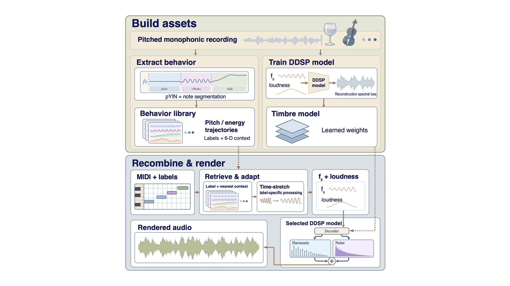

A system that learns timbre and performance behaviour as separate, swappable assets — letting musicians remix not just notes, but the way an instrument feels and responds.

Sample-based instruments bake performance micro-dynamics into fixed recordings. Producers who want hand-drawn pitch bends and modulation have to work within a single instrument — that expression does not transfer across timbres. Neural approaches learn expression end-to-end, but performance behaviour is not stored as a reusable asset.
Quill asks: can how an instrument sounds and how a performer plays be learned separately, from recordings, and recombined? It factorizes a monophonic recording into two independently stored, interchangeable assets — a lightweight DDSP timbre model and a note-level style library of pitch and energy trajectories. Either asset can be swapped across instruments without retraining.
The timbre side uses DDSP, a compact harmonic-plus-noise synthesizer (~500K parameters) that takes explicit f0 and loudness as input. Each instrument gets its own DDSP model, trained separately on violin and trumpet (URMP) and guitar (GuitarSet), converging in ~12k steps on a single GPU.
The behaviour side is a style library — a bank of note-level control trajectories extracted from real performances. Each entry stores four 48-frame trajectories (pitch deviation, energy, spectral brightness, noise ratio) plus an articulation label (plain, vibrato, or slide) and a 6-D context vector. Labels are assigned automatically via pYIN pitch contour analysis.
At render time, MIDI labels retrieve the nearest trajectory from the style library (filtered by label, then L2-nearest in context space), time-stretch it to the note duration, and feed it to any independently selected DDSP timbre model. A 20ms loudness crossfade smooths note boundaries.
Demo video
Cross-rendering across violin, trumpet, and guitar passes all 12 source-attribution checks — behaviour signatures (pitch modulation, drift, RMS) follow the behaviour source, while timbre signatures (MFCC) follow the timbre source.
A pre-specified listening study (N=19, randomised) found that renders carrying retrieved behaviour were rated more human-like (19/19) and more expressive (18/19). Behaviour-swap discrimination succeeded in 19/19 and 17/19 trials (all p<0.001). Cross-instrument ABX median per-participant accuracy was 100% on six violin/trumpet/guitar trials.
On standard violin naturalness, MIDI-DDSP scores higher (median 5 vs 4), but it cannot transfer expression across instruments — which is Quill's core capability.
ISMIR 2026 — Late-Breaking Demo · Abu Dhabi, UAE
An expressive renderer must learn two things: how an instrument sounds and how it is played. Quill factorizes them into two separately learned, reusable assets: a lightweight DDSP timbre model and a note-level style library of pitch and energy trajectories, retrieved by articulation-conditioned nearest-neighbor lookup. Either asset can be swapped across instruments without retraining. Cross-rendering across violin, trumpet, and guitar passes all 12 source-attribution checks. In a pre-specified listening study (N=19), listeners track behaviour across timbres and rate renders that carry it as more human-like. A paired counterfactual test isolates the articulation-label intervention from note-level confounds. A case study shows that both assets can also be learned from 82s of rubbed-glass recordings.